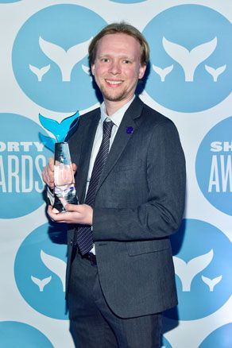

Create art with impact.
I strongly believe in using art and creativity as a means to affect change and influence others. I thrive in high pressure situations that require quick thinking and creative solutions. In five years, I built a small two-person department into a thriving cornerstone for the Center for Strategic and International Studies (CSIS) in Washington, D.C. Now in 2020, there are 18 full-time video producers, web developers, data scientists, and designers who are responsible for shaping the majority of CSIS's public outreach.
I have created projects that have been shown to high-level policymaking bodies in Congress and in international media. Most recently, I was the recipient of the Shorty Award for Best Data Visualization in social media, for spearheading and building a series of wildly successful interactive maps in 2016. In 2014, I led the creation of the Asia Maritime Transparency Initiative (https://amti.csis.org) with the CSIS Japan Chair. A year later, the website broke open the ongoing conflict in the South China Sea to a broad international audience, exposing efforts by China to build military outposts on artificial atolls.
 In 2010, I traveled to Haiti after its catastrophic January earthquake and produced several videos and a website on its rebuilding efforts. For that work, I won the Online News Association's annual award for best online video series and was a finalist for best multimedia website.
I currently hold the Andreas C. Dracopoulos Chair in Innovation and Creativity, and I am the Director of Technology at CSIS.
From editing video, writing code, and making sense of complex data, I capture the full picture.
All of the above would not have been possible had I not had an intuitive understanding of how all these diverse elements can come together to create an immersive whole. A strong, persuasive, and engaging online project can succeed only if takes advantage of all the possible tools. Click an image to learn more about my award-winning and impactful projects.
"That's just the way it's always been done," is one of the most frustrating reasons for doing something.
Communication in the era of smart phones and the Internet demands an agile and tradition-challenging paradigm. In this world, change is the only constant and one must know how to think versus possessing static knowledge that may become obsolete in the span of years, or even months.
I have spent a career seeing first-hand the real challenges that organizations large and small have dealt with as they adapt to this fluid landscape. Traditional solutions to this challenge are insufficient and a communication strategy must be broadly defined and not limited to vague buzzwords and corporate language.
We are not doing "e-communications," "multimedia," or anything of the sort. We are in the communications business. Our job is to tell compelling stories, no matter the medium. Our work must encompass all forms of media – images, motion, audio, text, interactivity, and emerging forms like augmented and virtual reality.
But to claim that this is something special or extraordinary misses the point. Organizations must know that this is the order of communications. Any strategy that does not take this into account will fail.
My professional website has gone through many revisions since I first built it, reflecting different phases of my career.
Welcome to the 2020 version. This website is served by GitHub Pages and powered by Jekyll, a powerful static site generator. This iteration of my site is the best performing yet as a result. Special thanks to HTML5 UP for the compiled theme files and framework. I've modified their fine work for this website.